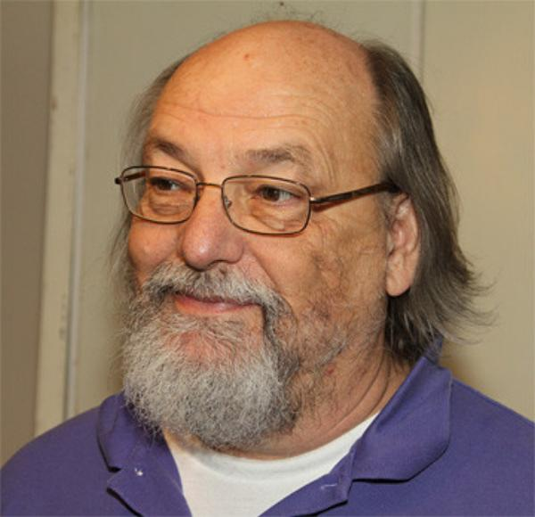
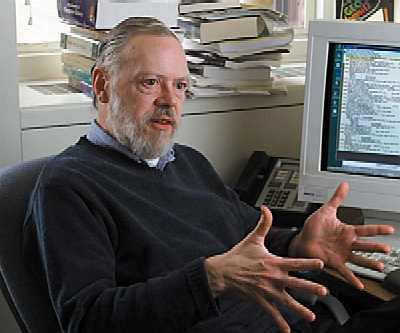

Си (англ. C) — стандартизированный процедурный язык программирования, разработанный в начале 1970-х годов сотрудниками Bell Labs Кеном Томпсоном и Денисом Ритчи как развитие языка Би. Си был создан для использования в операционной системе UNIX. С тех пор он был портирован на многие другие операционные системы и стал одним из самых используемых языков программирования. Си ценят за его эффективность. Он является самым популярным языком для создания системного программного обеспечения. Его также часто используют для создания прикладных программ. Несмотря на то, что Си не разрабатывался для новичков, он активно используется для обучения программированию. В дальнейшем синтаксис языка Си стал основой для многих других языков (см.: Си-подобный синтаксис).
Для языка Си характерны лаконичность, современный набор конструкций управления потоком выполнения, структур данных и обширный набор операций.
Язык программирования Си отличается минимализмом. Авторы языка хотели, чтобы программы на нём легко компилировались с помощью однопроходного компилятора, чтобы каждой элементарной составляющей программы после компиляции соответствовало весьма небольшое число машинных команд, а использование базовых элементов языка не задействовало библиотеку времени выполнения. Однопроходный компилятор компилирует программу, не возвращаясь назад, к уже обработанному тексту. Поэтому использованию функции должно предшествовать её объявление. Код на Си можно легко писать на низком уровне абстракции, почти как на ассемблере. Иногда Си называют «универсальным ассемблером» или «ассемблером высокого уровня», что отражает различие языков ассемблера для разных платформ и единство стандарта Си, код которого может быть скомпилирован без изменений практически на любой модели компьютера. Си часто называют языком среднего уровня или даже низкого уровня, учитывая то, как близко он работает к реальным устройствам.
Компиляторы Си разрабатываются сравнительно легко благодаря относительно низкому уровню языка и скромному набору элементов. Поэтому данный язык доступен на самых различных платформах (возможно, круг этих платформ шире, чем у любого другого существующего языка). К тому же, несмотря на свою низкоуровневую природу, язык позволяет создавать переносимые программы и поддерживает в этом программиста. Программы, соответствующие стандарту языка, могут компилироваться на самых различных компьютерах.
Си (как и ОС UNIX, с которой он долгое время был связан) создавался программистами и для программистов, круг которых был бы ненамного шире круга разработчиков языка. Несмотря на это, область использования языка значительно шире задач системного программирования.
Си создавался с одной важной целью: сделать более простым написание больших программ с минимумом ошибок по правилам процедурного программирования, не добавляя на итоговый код программ лишних накладных расходов для компилятора, как это всегда делают языки очень высокого уровня, такие как Бейсик.
Вот некоторые особенности других языков программирования, которых не имеет Си:
После появления язык Си был хорошо принят, потому что он позволял быстро создавать компиляторы для новых платформ, а также позволял программистам довольно точно представлять, как выполняются их программы. Благодаря этому программы, написанные на Си, эффективнее написанных на многих других языках. Как правило, лишь оптимизированный вручную код на ассемблере может работать ещё быстрее, потому что он даёт полный контроль над машиной, однако развитие современных компиляторов вместе с усложнением современных процессоров быстро сократило этот разрыв.
Одним из последствий высокой эффективности и переносимости Си стало то, что многие компиляторы, интерпретаторы и библиотеки других языков высокого уровня часто выполнены на языке Си.
Таблица 2.1 Арифметические операции
| Оператор | Операция, которая проводится с данными |
|---|---|
| + | Сложение данных |
| - | Вычитание данных |
| * | Умножение данных |
| / | Деление данных |
| % | Деление данных по модулю |
Общий вид оператора присваивания следующий:
имя_переменной = выражение;
где выражение может быть как простой одиночной константой, так и сложной комбинацией переменных, операторов и констант. Как в Бейсике и Фортране, в С используется знак равенства для отображения операции присваивания (не так, как в Паскале или Модуле-2, где используется конструкция :=). В левой части оператора присваивания должна стоять переменная, а не функция или константа.
Таблица 2.2 Оператор присваивания
| Комбинированный оператор | Операция (что происходит при использовании в коде) |
|---|---|
| += | Сложение данных с присваиванием |
| -= | Вычитание данных с присваиванием |
| *= | Умножение данных с присваиванием |
| /= | Деление данных с присваиванием |
| %= | Деление данных по модулю с присваиванием |
С имеет очень мощный оператор, который можно использовать вместо структуры if-then-else. Оператор ? имеет следующий вид:
выражение1 ? выражение2 : выражение3
где выражение1, выражение2 и выражениеЗ - это выражения.
Оператор ? работает следующим образом: вычисляется выражение1; если оно истинно, то вычисляется выражение2 и все выражение получает это значение; а если оно ложно, то вычисляется выражение3 и все выражение получает это значение. Например:
х = 10; у = х > 9 ? 100 : 200;
В данном примере у получает значение 100. Если бы х было меньше, чем 9, то у получило бы значение 200. Ниже приведен фрагмент программы, выполняющий такие же действия, но с использованием операторов if/else:
х = 10; if (х > 9) у = 100; else у = 200;
Таблица 2.3 Операторы сравнения
== |
Равенство (равно) |
!= |
Не равно |
! |
Логическое отрицание |
>= |
Больше или равно |
<= |
Меньше или равно |
> |
Больше |
| < | Меньше (по возможности желательно воздержаться от применения этого типа) |
Программы на языке C/C++ обычно состоят из программных блоков или единичных операторов. Программные блоки - это группы операторов, которые заключаются в фигурные скобки { и }. Каждый оператор, если он занимает единственную строку, имеет разграничивающую точку с запятой ;, обозначающую окончание оператора. Каждый оператор имеет собственный синтаксис. Синтаксис оператора - это набор правил, определяющих обязательные и допустимые для использования в данном операторе значения. При несоблюдении правил синтаксиса произойдет ошибка компиляции.
В С все комментарии начинаются с пары символов /* и заканчиваются парой */. Между слэшем и звездочкой не должно быть пробелов. Компилятор игнорирует любой текст между данными парами символов. Например, следующая программа выводит на экран только hello:
#includeint main(void) { printf("hello"); /* printf("there"); */ return 0; }
Комментарии могут находиться в любом месте программы, за исключением случая, когда комментарий разбивает на части ключевое слово или идентификатор.
Комментарии не могут быть вложенными, т.е. один комментарий не может содержать другой комментарий.
Комментарии следует использовать, когда необходимо объяснить какую-либо операцию кода. Все функции, за исключением самых очевидных, должны содержать комментарии в начале их объявления, где следует писать, что функция делает, какие параметры она получает и что возвращает.
В С и других современных языках программирования циклы позволяют выполнять набор инструкций до тех пор, пока не выполнится некоторое условие.
Стандартный формат цикла for в С, вероятно, знаком читателю, поскольку его можно найти в той или иной форме во всех языках программирования. Тем не менее, в С цикл for обладает дополнительной гибкостью и мощью.
Стандартный вид цикла for следующий:
for (инициализация; условие; увеличение) оператор;
Оператор for имеет три главные части:
Эти три важные части должны разделяться точкой с запятой. Цикл for работает до тех пор, пока условие истинно. Когда условие становится ложным, выполнение программы продолжается с оператора, следующего за циклом for.
Следующий итерационный оператор, доступный в С, - это while. Его стандартный вид следующий:
while (условие) оператор;
где оператор - это или пустой, или простой, или составной оператор. Условием может любое выражение, имеющее в качестве истины ненулевое значение. Цикл выполняется, пока условие истинно. Когда условие становится ложным, выполняется строка, следующая за циклом.
Следующий пример показывает процедуру, обрабатывающую ввод с клавиатуры, работающую пока не будет введен символ А:
void wait_for_char(void)
{
char ch;
ch = '\0'; /* инициализация ch */
while(ch!='A') ch = getchar ();
}
Как и цикл for, цикл while сначала выполняет проверку, то есть тело цикла может вообще не выполняться. Благодаря этому можно не выполнять отдельные проверки перед циклом.
В противоположность циклам for и while, сначала проверяющим условие, цикл do/while проверяет условие в конце. То есть, цикл do/while всегда выполняется, по крайней мере, один раз. Стандартный вид цикла do/while следующий:
do {
последовательность операторов;
}
while (условие);
Хотя в фигурных скобках нет необходимости при наличии одного оператора, они обычно используются для улучшения читабельности и устранения недоразумений (у читателя, а не у компилятора) по поводу цикла while.
Данный цикл do/while осуществляет чтение чисел с клавиатуры до тех пор, пока одно из них не станет меньше либо равно 100:
do {
scanf ("%d", &num);
} while (num > 100);
Возможно, наиболее типичным использованием цикла do/while является процедура выбора пунктов меню. Когда набран корректный ответ, она возвращает значение функции. Неправильный ответ приводит к повторному вводу.
Функции - это базовые блоки С, в которых выполняются все операции. Стандартный вид функций следующий:
спецификатор_типа имя_функции (список параметров)
{
тело функции
}
Спецификатор_типа определяет тип возвращаемого функцией значения с помощью оператора return. Это может быть любой допустимый тип. Если тип не указан, предполагается, что функция возвращает целочисленные значения. Список параметров - это разделенный запятыми список переменных, получающий значение аргументов при вызове функции. Функция может быть без параметров и в таком случае список параметров содержит ключевое слово void.
Оператор return имеет два назначения. Во-первых, немедленный выход из функции. То есть он осуществляет выход в вызывавший функцию код. Во-вторых, может использоваться для возврата значения. Здесь рассмотрены оба назначения.